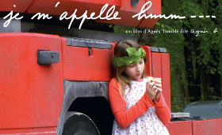

Toponimia
Toponymy
Agnès Troublé aka agnès b. – France 2013
121 min – HD – French OV Engl. ST
Sc+DoP+Set Design: agnès b. – P: Love Streams agnès b. – With Lou-Lélia Demerliac, Douglas Gordon, Sylvie Testud
German Premiere
A fiction. An 11 year old runaway, the oldest daughter of three.
An absent mother, an abusive father, a grandmother too pure to imagine what is going on.
A field trip, the girl disappears… she has found refue in a truck; an initiatory journey, a chance meetin, new encounters; a wonderful and tragic road movie with a Scottish truck driver "when love just happens."
"I wrote Je m’appelle Hmmm... in one go, some ten years back, on an impulse, at the same time as I was carrying on with fashion design, and was waiting for the moment to achieve my 'real things.' I had read in 'Le Monde' an article about an accused man who killed himself in the judge's office, using a letter-opener. I took the liberty of inventing the story that could have led him to this desperate gesture—on the occasion of a school trip to the seaside, a 12-years-old or so girl, abused by her father on a regular basis, escapes.
I wanted to make a film against prejudice and show one should be careful not to make hasty judgments. You risk picking the wrong target. I wanted to show this journey as an 'out-of-time' period... and also show the intensity of their mutual love, so silent, pure, and evident. This is not my own personal story, but I know what I’m talking about." – agnès b.
friday 9 oct 9.00 pm filmmuseum münchen
Interview with agnès b. (in French)
French designer agnès b was born Agnès Troublé in Versailles. She studied at Versailles’s Ecole des Beaux-Arts. After graduation, she worked as a junior editorfor "Elle" before becoming a designer, press attache and buyer to Dorothée Bis in Paris. In 1966, she established the CMC (Comptoir Mondial de Creation), the holding company for agnès b. In 1975, she established the first agnès b Boutique at Les Halles Paris. agnès b was one of the first designers to tackle the "trend-setters" head-on. agnès b. founded a joint film concern with Korine called O'Salvation, under whose banner Korine began production on Mister Lonely in London in 2006. She also designated an entity for personal projects, christened Love Streams, with the blessing of Gena Rowlands, widow of John Cassavetes who directed the 1984 film of the same name. Her acts of film patronage include the supplying of completion funds to Gaspar Noé for Irréversible (2002) and Claire Denis for Trouble Every Day (2001), as well as the underwriting of numerous film festivals. JE M'APPELLE HMMM… is her feature debut.